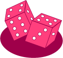

Antwort:
Logisch gesehen, nein.
Aber es ist oft zweckmäßig.
Jedes Objekt einer Simulation könnte ihren eigenen Zufallszahlengenerator enthalten.
Wenn Sie Kaulquappen simulieren würden, die in einem Teich zufällig herumschwimmen,
würden Sie wahrscheinlich einen Zufallszahlengenerator als Teil eines jeden Kaulquappen-Objekts haben.
Zwei-Würfel-Programm

Hier ist ein Programm, dass das Werfen von Würfeln simuliert:
import java.util.*;
public class ZweiWuerfel
{
public static void main ( String[] args )
{
Scanner scan = new Scanner( System.in );
Random rand = new Random();
while ( true )
{
System.out.print("Ihr Wurf ist eine " + (rand.nextInt(6)+1 + rand.nextInt(6)+1) );
String input = scan.nextLine();
}
}
}
Die zwei Würfe und die Summe der Punkte ist in dem Ausdruck
(rand.nextInt(6)+1 + rand.nextInt(6)+1)
implementiert. Jeder Aufruf von nextInt(6) ist völlig unabhängig vom vorherigen Aufruf,
also ist das das gleiche wie das Werfen von zwei unabhängigen Würfeln.